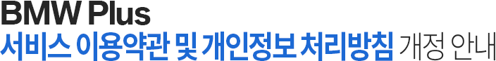

|
|  |
|
서비스 확대에 따른 서비스 이용약관 및 개인정보처리방침을 개정하오니, 아래 내용 참조하여 서비스 이용에 불편이 없도록 유의하시기 바랍니다.
|
1. 서비스 이용약관 개정안내
- 시행 일자: 2018년 05월 29일부터 효력 발생
- 개정 사유: 서비스 확대에 따른 수정된 문구를 조항에 반영
서비스 이용약관 개정 내용
|
| 조항 |
개정 전 |
개정 후 |
제1조
(목적) |
이 약관은 비엠더블유코리아㈜(이하 "BMW Korea"라고 합니다)가 제공하는 BMW Plus 서비스 웹페이지(http://www.bmw-plus.co.kr, 이하 "BMW Plus 웹 홈페이지"라고 합니다)와 스마트폰 및 이동통신기기를 통해 제공되는 BMW Plus 모바일 어플리케이션(이하 "BMW Plus 어플리케이션"라고 합니다) 및 BMW Plus 모바일 인터넷 홈페이지(http://m.bmw-plus.co.kr, 이하 "BMW Plus 모바일 홈페이지"이라고 합니다)를 통해 제공하는 온라인 서비스 (이하 "BMW Plus 서비스" 라고 합니다)와 관련하여, 이 약관에 동의하고 서비스를 이용하는 회원간의 권리와 의무, 책임사항 및 회원의 서비스 이용절차에 관한 사항 등을 규정함을 목적으로 합니다. |
이 약관은 비엠더블유코리아㈜(이하 " BMW Korea ㈜로 표시함)가 제공하는 BMW Plus, MINI Plus 서비스 웹페이지(https://www.bmw-plus.co.kr, https://www.mini-plus.co.kr 이하 "BMW&MINI Plus 웹 홈페이지"라고 합니다)와 스마트폰 및 이동통신기기를 통해 제공되는 BMW Plus, MINI Plus 모바일 어플리케이션(이하 " BMW&MINI Plus 어플리케이션"라고 합니다) 및 BMW Plus, MINI Plus 모바일 인터넷 홈페이지(http://m.bmw-plus.co.kr, http://m.mini-plus.co.kr 이하 " BMW&MINI Plus 모바일 홈페이지"이라고 합니다)를 통해 제공하는 온라인 서비스 (이하 " BMW&MINI Plus 서비스" 라고 합니다)와 관련하여, 이 약관에 동의하고 서비스를 이용하는 회원간의 권리와 의무, 책임사항 및 회원의 서비스 이용절차에 관한 사항 등을 규정함을 목적으로 합니다.
|
제2조
(용어의 정의) |
① 이 약관에서 사용하는 용어의 정의는 다음과 같습니다.
1. BMW Plus 서비스: 구현되는 단말기(PC, 스마트폰과 같은 휴대형 단말기 등 각종 유무선 장치를 포함)와 상관없이, BMW Korea가 제공하는 BMW Plus 웹 홈페이지, BMW Plus 어플리케이션, BMW Plus 모바일 홈페이지를 통해 “이용자에게 제공하는 제반 서비스를 의미합니다.
2. 이용자: BMW Plus 웹 홈페이지, BMW Plus 어플리케이션, BMW Plus 모바일 홈페이지에 접속하여 BMW Korea가 제공하는 BMW Plus 서비스를 이용하는 회원 및 비회원을 말합니다.
3. 회원: BMW Plus 웹 홈페이지, BMW Plus 어플리케이션, BMW Plus 모바일 홈페이지에 접속하여 이 약관에 동의하는 등 BMW Korea와 서비스 이용계약을 체결하고, BMW Korea가 제공하는 제공하는 BMW Plus 서비스를 이용하는 고객을 말합니다.
4. 비회원: 회원에 가입하지 않고, BMW Plus 웹 홈페이지, BMW Plus 어플리케이션, BMW Plus 모바일 홈페이지에 접속하여 BMW Korea가 제공하는 제공하는 서비스를 이용하는 고객을 말합니다. |
① 이 약관에서 사용하는 용어의 정의는 다음과 같습니다.
1. BMW&MINI Plus 서비스: 구현되는 단말기(PC, 스마트폰과 같은 휴대형 단말기 등 각종 유무선 장치를 포함)와 상관없이, BMW Korea ㈜가 제공하는 BMW&MINI Plus 웹 홈페이지, BMW&MINI Plus 어플리케이션, BMW&MINI Plus 모바일 홈페이지를 통해 “이용자에게 제공하는 제반 서비스를 의미합니다.
2. 이용자: BMW&MINI Plus 웹 홈페이지, BMW&MINI Plus 어플리케이션, BMW&MINI Plus 모바일 홈페이지에 접속하여 BMW Korea ㈜가 제공하는 BMW&MINI Plus 서비스를 이용하는 회원 및 비회원을 말합니다.
3. 회원: BMW&MINI Plus 웹 홈페이지, BMW&MINI Plus 어플리케이션, BMW&MINI Plus 모바일 홈페이지에 접속하여 이 약관에 동의하는 등 BMW Korea ㈜와 서비스 이용계약을 체결하고, BMW Korea ㈜가 제공하는 제공하는 BMW&MINI Plus 서비스를 이용하는 고객을 말합니다.
4. 비회원: 회원에 가입하지 않고, BMW&MINI Plus 웹 홈페이지, BMW&MINI Plus 어플리케이션, BMW&MINI Plus 모바일 홈페이지에 접속하여 BMW Korea ㈜가 제공하는 제공하는 서비스를 이용하는 고객을 말합니다.
|
제3조
(약관의 게시 및 변경) |
① BMW Korea는 이 약관의 내용과 상호, 영업소 소재지, 대표자의 성명, 사업자등록번호, 연락처(전화, 팩스, 전자우편주소 등) 등을 BMW Plus 서비스를 이용하고자 하는 이용자가 쉽게 알 수 있도록 서비스가 제공되는 BMW Plus 웹 홈페이지, BMW Plus 어플리케이션, BMW Plus 모바일 홈페이지의 초기화면에 게시합니다. 다만, 이 약관의 내용은 연결화면(링크)을 통하여 게시될 수 있습니다. |
① BMW Korea ㈜는 이 약관의 내용과 상호, 영업소 소재지, 대표자의 성명, 사업자등록번호, 연락처(전화, 팩스, 전자우편주소 등) 등을 BMW&MINI Plus 서비스를 이용하고자 하는 이용자가 쉽게 알 수 있도록 서비스가 제공되는 BMW&MINI Plus 웹 홈페이지, BMW&MINI Plus 어플리케이션, BMW&MINI Plus 모바일 홈페이지의 초기화면에 게시합니다. 다만, 이 약관의 내용은 연결화면(링크)을 통하여 게시될 수 있습니다.
|
제6조
(회원가입 신청) |
① BMW Korea는 이용자의 정보수집 BMW Plus 시스템 운영에 필요한 최소한의 정보를 수집합니다. 회원가입을 원하는 고객은 BMW Korea가 제공하는 회원 가입신청양식에 다음 사항을 필수사항 기재해야 하며, 그 외 사항은 관련법령 및 개인정보취급방침의 내용을 따릅니다. |
① BMW Korea ㈜는 이용자의 정보수집 BMW&MINI Plus 시스템 운영에 필요한 최소한의 정보를 수집합니다. 회원가입을 원하는 고객은 BMW Korea ㈜가 제공하는 회원 가입신청양식에 다음 사항을 필수사항 기재해야 하며, 그 외 사항은 관련법령 및 개인정보취급방침의 내용을 따릅니다.
|
제7조
(신청의 승낙) |
7. 기타 이 약관에 위배되거나, 위법 또는 부당한 목적으로 회원가입을 신청한 경우
② BMW Korea는 다음 각 호 사유가 있는 경우, 회원가입 신청에 대한 승낙을 유보할 수 있습니다. 이 경우, BMW Korea는 고객에게 승낙유보의 이유, 승낙에 필요한 추가 정보 요청 등 승낙유보와 관련된 사항을 BMW Plus 웹 홈페이지, BMW Plus 어플리케이션, BMW Plus 모바일 홈페이지가 구현되는 단말기의 화면에 게시하거나, 이메일 전송 및 기타 방법으로 통지할 수 있습니다. |
7. 기타 이 약관에 위배되거나, 위법 또는 부당한 목적으로 회원가입을 신청한 경우
② BMW Korea ㈜는 다음 각 호 사유가 있는 경우, 회원가입 신청에 대한 승낙을 유보할 수 있습니다. 이 경우, BMW Korea ㈜는 고객에게 승낙유보의 이유, 승낙에 필요한 추가 정보 요청 등 승낙유보와 관련된 사항을 BMW&MINI Plus 웹 홈페이지, BMW&MINI Plus 어플리케이션, BMW&MINI Plus 모바일 홈페이지가 구현되는 단말기의 화면에 게시하거나, 이메일 전송 및 기타 방법으로 통지할 수 있습니다.
|
제16조
(회원의 민원처리) |
① 회원은 BMW Korea ㈜가 운영하는 BMW 커뮤니케이션 센터 (080-269-2200) 등을 통해 서비스 이용 시 불편사항이나 민원사항을 처리할 수 있습니다. |
① 회원은 BMW Korea ㈜가 운영하는 BMW 커뮤니케이션 센터 (080-269-2200) / MINI 커뮤니케이션 센터 (080-646-4003) 등을 통해 서비스 이용 시 불편사항이나 민원사항을 처리할 수 있습니다.
|
|
2. 개인정보처리방침 개정 안내
- 시행 일자: 2018년 05월 29일부터 효력 발생
- 개정 사유: 1) 서비스 확대에 따른 수정된 문구를 조항에 반영
2) 개인정보보호 책임자 변경 반영
개인정보처리방침 개정 내용
|
| 조항 |
개정 전 |
개정 후 |
| 본문 |
본 개인정보 처리방침은 BMW Korea ㈜가 제공하는 BMW Plus 서비스 웹페이지(http://www.bmw-plus.co.kr, 이하 BMW Plus 웹 홈페이지로 표시함)와 스마트폰 및 이동통신기기를 통해 제공되는 BMW Plus 모바일 어플리케이션(이하 BMW Plus 어플리케이션로 표시함) 및 BMW Plus 모바일 인터넷 홈페이지(http://m.bmw-plus.co.kr, 이하 BMW Plus 모바일 홈페이지로 표시함)을 통해 제공하는 온라인 서비스와 관련하여, 이 약관에 동의하고 서비스를 이용하는 회원간의 권리와 의무, 책임사항 및 회원의 서비스 이용절차에 관한 사항 등을 규정함을 목적으로 합니다.
BMW Korea ㈜는 개인정보보호 관련 주요 법률인 '개인정보 보호법', '정보통신망 이용촉진 및 정보보호 등에 관한 법률'을 준수하기 위하여 개인정보처리방침을 제정하고 이를 준수하고 있으며, BMW Plus 서비스의 '개인정보처리방침'을 BMW Plus웹 홈페이지, BMW Plus 어플리케이션, BMW Plus 모바일 홈페이지에 공개하여 고객이 언제나 용이하게 열람할 수 있도록 하고 있습니다. BMW Plus의 '개인정보처리방침'은 관련 법률 및 지침의 변경 또는 내부 운영방침의 변경에 따라 변경될 수 있습니다. BMW Plus의 '개인정보처리방침'이 변경될 경우 변경된 '개인정보처리방침'을 BMW Plus웹 홈페이지, BMW Plus 어플리케이션, BMW Plus 모바일 홈페이지를 통하여 공지합니다.
BMW Plus 의 개인정보처리방침은 다음과 같은 내용을 담고 있습니다. |
본 개인정보 처리방침은 BMW Korea ㈜가 제공하는 BMW Plus, MINI Plus 서비스 웹페이지(https://www.bmw-plus.co.kr, https://www.mini-plus.co.kr 이하 "BMW&MINI Plus 웹 홈페이지"라고 합니다)와 스마트폰 및 이동통신기기를 통해 제공되는 BMW Plus, MINI Plus 모바일 어플리케이션(이하 " BMW&MINI Plus 어플리케이션"라고 합니다) 및 BMW Plus, MINI Plus 모바일 인터넷 홈페이지(http://m.bmw-plus.co.kr, http://m.mini-plus.co.kr 이하 " BMW&MINI Plus 모바일 홈페이지"이라고 합니다)를 통해 제공하는 온라인 서비스 (이하 " BMW&MINI Plus 서비스" 라고 합니다)와 관련하여, 이 약관에 동의하고 서비스를 이용하는 회원간의 권리와 의무, 책임사항 및 회원의 서비스 이용절차에 관한 사항 등을 규정함을 목적으로 합니다.
BMW Korea ㈜는 개인정보보호 관련 주요 법률인 ‘개인정보 보호법’, ‘정보통신망 이용촉진 및 정보보호 등에 관한 법률’을 준수하기 위하여 개인정보처리방침을 제정하고 이를 준수하고 있으며, BMW&MINI Plus 서비스의 ‘개인정보처리방침’을 BMW&MINI Plus 웹 홈페이지, BMW&MINI Plus 어플리케이션, BMW&MINI Plus 모바일 홈페이지에 공개하여 고객이 언제나 용이하게 열람할 수 있도록 하고 있습니다. BMW&MINI Plus 의 ‘개인정보처리방침’은 관련 법률 및 지침의 변경 또는 내부 운영방침의 변경에 따라 변경될 수 있습니다. BMW&MINI Plus 의 ‘개인정보처리방침’이 변경될 경우 변경된 ‘개인정보처리방침’을 BMW&MINI Plus 웹 홈페이지, BMW&MINI Plus 어플리케이션, BMW&MINI Plus 모바일 홈페이지를 통하여 공지합니다.
BMW&MINI Plus 의 개인정보처리방침은 다음과 같은 내용을 담고 있습니다.
|
| 가. 개인정보 수집 및 이용 목적 |
BMW Korea ㈜는 BWM Plus 서비스를 위해 회원가입 및 관리, 온라인 서비스 제공, BMW Plus 개선, 민원 처리, 마케팅 목적 등을 위하여 개인정보를 수집하여 활용하고 있습니다.
- 서비스 제공
BMW Plus 웹 홈페이지, BMW Plus 어플리케이션, BMW Plus 모바일 홈페이지를 통한 정비 예약 서비스(공식 서비스 센터 예약)제공, 위치기반의 가까운 지점 안내, 예약 확인 및 BMW Plus를 통해 예약 받은 서비스의 정비 내역, 캠페인 정보 및 차량 정보 등
- 서비스 개선
BMW Plus 웹 홈페이지, BMW Plus 어플리케이션, BMW Plus 모바일 홈페이지를 이용한 서비스를 회원의 컴퓨터 등 정보통신기기에 최적화된 방식으로 제공할 수 있도록 개선, 서비스 개발, 개선 등 BMW Korea ㈜의 업무와 관련된 통계자료의 작성 |
BMW Korea ㈜는 BMW&MINI Plus 서비스를 위해 회원가입 및 관리, 온라인 서비스 제공, BMW&MINI Plus 개선, 민원 처리, 마케팅 목적 등을 위하여 개인정보를 수집하여 활용하고 있습니다.
- 서비스 제공
BMW&MINI Plus 웹 홈페이지, BMW&MINI Plus 어플리케이션, BMW&MINI Plus 모바일 홈페이지를 통한 정비 예약 서비스(공식 서비스 센터 예약)제공, 위치기반의 가까운 지점 안내, 예약 확인 및 BMW&MINI Plus를 통해 예약 받은 서비스의 정비 내역, 캠페인 정보 및 차량 정보 등
- 서비스 개선
BMW&MINI Plus 웹 홈페이지, BMW&MINI Plus 어플리케이션, BMW&MINI Plus 모바일 홈페이지를 이용한 서비스를 회원의 컴퓨터 등 정보통신기기에 최적화된 방식으로 제공할 수 있도록 개선, 서비스 개발, 개선 등 BMW Korea ㈜의 업무와 관련된 통계자료의 작성
|
| 나. 개인정보 수집 항목 및 수집 방법 |
① 서비스 제공에 필요한 최소한의 필수 정보
목적
BMW Plus 회원제 서비스 이용에 따른 본인확인 및 회원가입
② 정보주체의 동의 하에 수집되는 선택 정보
목적
BMW Plus 서비스 예약, 캠페인 정보 알림 등 차량정보 기반의 각종 혜택 안내 |
① 서비스 제공에 필요한 최소한의 필수 정보
목적
BMW&MINI Plus 회원제 서비스 이용에 따른 본인확인 및 회원가입
② 정보주체의 동의 하에 수집되는 선택 정보
목적
BMW&MINI Plus 서비스 예약, 캠페인 정보 알림 등 차량정보 기반의 각종 혜택 안내
|
| 다. 개인정보 제3자 제공 |
보유 및 이용 기간
BMW Plus 회원을 탈퇴할 때까지 보유 |
보유 및 이용 기간
BMW&MINI Plus 회원을 탈퇴할 때까지 보유 |
| 라. 개인정보 처리 위탁 |
제공정보의 이용목적
BMW Plus 시스템 운영/유지보수 및 개인정보 저장 서버의 관리 업무
BMW Plus 개인정보의 백업관리 및 유지 |
제공정보의 이용목적
BMW&MINI Plus 시스템 운영/유지보수 및 개인정보 저장 서버의 관리 업무
BMW&MINI Plus 개인정보의 백업관리 및 유지 |
| 마. 개인정보의 국외이전 |
보유 및 이용 기간
BMW Plus 회원을 탈퇴할 때까지 보유 (관련 법률 및 규정에 의해 개인정보를 보유해야 하는 경우 제외) |
보유 및 이용 기간
BMW&MINI Plus 회원을 탈퇴할 때까지 보유 (관련 법률 및 규정에 의해 개인정보를 보유해야 하는 경우 제외) |
자. 고객 및 법정대리인의 권리와
행사방법 |
고객님의 개인정보 조회, 수정, 동의철회를 위해서는, BMW Communication Center (Tel. 080-269-2200)으로 연락하시거나, 개인정보보호책임자에게 서면, 전화 또는 이메일로 연락하시면 요청하신 내용을 조치하겠습니다. |
고객님의 개인정보 조회, 수정, 동의철회를 위해서는, BMW 커뮤니케이션 센터 (Tel. 080-269-2200) / MINI 커뮤니케이션 센터 (Tel. 080-646-4003) 으로 연락하시거나, 개인정보보호책임자에게 서면, 전화 또는 이메일로 연락하시면 요청하신 내용을 조치하겠습니다. |
| 카. 개인정보보호 책임자 및 담당자 |
개인정보보호 책임자
Sales Channel Development 총괄 정상천 이사 |
개인정보보호 책임자
Sales Channel Development 총괄 주양예 상무 |
|
- 개정 약관 시행일로부터 7일간(2018년05월29일 ~ 2018년06월04일) 거부의사를 표시하지 않는 경우 개정에
동의하시는 것으로 간주됩니다.
- 본 개정에 동의를 거부하시는 경우에는 회원 탈회(이용계약의 해지)를 요청하실 수 있습니다.
- 본 개정에 대한 문의는 BMW 커뮤니케이션 센터 (Tel. 080-269-2200) 혹은 BMW Plus의 고객센터 내 1:1 문의로
보내주시기 바랍니다. |
|
 |
|